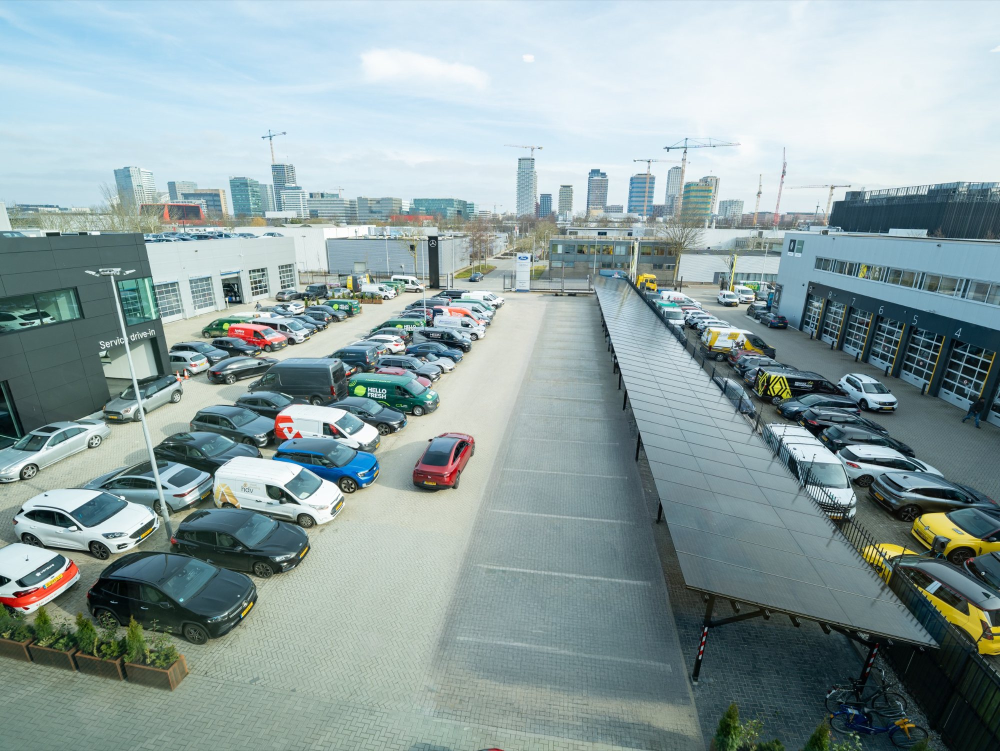

Het net is vol, maar capaciteit zit vast in losse aansluitingen. Een Energy Hub verbindt meerdere gebouwen tot één lokale energiecentrale — gedeelde capaciteit, ruimte om te groeien, zonder te wachten op netverzwaring.
Elk gebouw heeft een eigen aansluiting en houdt vermogen vast dat het zelden vol benut. De pieken vallen op verschillende momenten — maar het net wordt verzwaard op ieders maximum, niet op het gedeelde gemiddelde. Op gebiedsniveau wordt zo enorm veel capaciteit verspild.
Elektrificatie en ontwikkeling stuwen de vermogenvraag — van alle panden tegelijk.
Verzwaring per aansluiting kost jaren — als die al verleend wordt op congestiegebied.
Een Energy Hub verbindt meerdere gebouwen, aansluitingen en assets en stuurt ze als één geheel op gebiedsniveau. Opwek, opslag en verbruik worden gedeeld; via cable pooling gebruiken de panden samen de bestaande aansluitingen slimmer. Het is geen installatie op één dak, maar energie-infrastructuur voor een heel terrein, complex of gebied.
— Vibe Energy · positie
De bouwsteen: zon, opslag en laden op één locatie, verbonden tot één zelfsturend systeem.
De schaalsprong: meerdere locaties gekoppeld en gestuurd als één energiecentrale.
Vier stappen waarin losse gebouwen samen één gestuurde energiecentrale worden.
Panden of aansluitingen die dicht bij elkaar liggen en hun energie kunnen bundelen.
Opwek- en verbruiksassets delen één aansluiting in plaats van ieder een eigen verbinding.
Eén regie verdeelt opwek, opslag en verbruik over alle locaties heen.
Het gebied benut de bestaande aansluitingen slimmer — virtuele netverzwaring.
Capaciteit ontstaat aan de eigen kant van de meter — geen jarenlange wachtrij bij de netbeheerder.
0 mnd wachttijdPieken die elkaar niet overlappen worden gedeeld; bestaande aansluitingen worden veel beter benut.
Hogere benuttingsgraadPanden, terreinen en aansluitingen functioneren als één systeem in plaats van losse eilanden.
Eén gebied · één systeemBegin met één microgrid en breid uit naar een volledig gebied — de structuur groeit mee.
Microgrid → hubEigen opwek wordt binnen het gebied benut in plaats van teruggeleverd tegen lage prijs.
Opwek blijft lokaalEen gedeelde hub verlaagt de kosten én verhoogt de waarde van elk pand dat erop is aangesloten.
Infrastructuur met waardeMeer ontwikkelcapaciteit op bestaande aansluitingen — nieuwe panden en functies passen er alsnog bij.
Capaciteit die nu per pand vaststaat, wordt gedeeld en daardoor veel intensiever benut.
Uitbreiding hoeft niet te wachten op netverzwaring — groei kan binnen het bestaande gebied door.
Beschikbare capaciteit en laadinfra maken een terrein of portefeuille aantrekkelijker voor huurders en kopers.
Eigen opwek en opslag verminderen de afhankelijkheid van het net en van marktprijzen.
Een gestuurd, gebundeld systeem is robuuster en beter bestand tegen pieken en uitval.
Impact is gebiedsafhankelijk · uitkomst hangt af van panden, aansluitingen en ontwikkelplan.
Of uw terrein, complex of gebied een hub kan worden, bepalen we in een quickscan.
Stel uw vraagEén gesprek waarin we capaciteit, infrastructuur en gebiedsontwikkeling samenbrengen — met een eerste beeld van wat een hub voor uw terrein, complex of portefeuille kan betekenen.